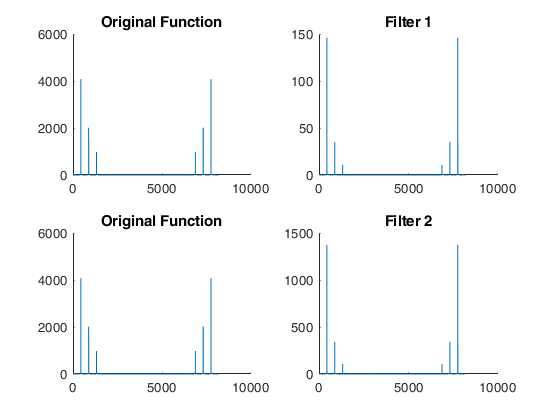
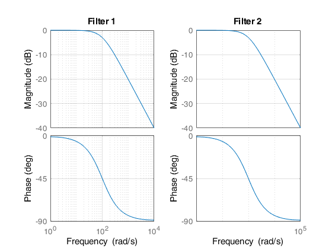
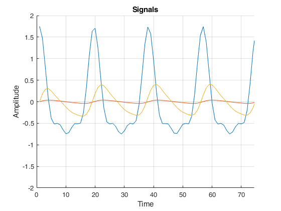

ELEN110L - Lab5: Harmonic Filtering
Thomas Heckman 5/10/18
The goal of this lab is to gain a futher understanding of Signal filtering and to use our knowledge of signal mechanics
Contents
Initial Code
Fs = 8192; % Hz (sample rate of sound() function t = 0:1/Fs:1; % creating time vector wo = 2*pi*440; % 440Hz, concert A x = cos(wo.*t) + 1/2*cos(2*wo.*t) + 1/4*cos(3*wo.*t);
Signal Operations
%Signal 1 - Original Signal y1 = x; To = (2*pi*8192)/wo; %Signal 2 - Filter 1 % This lower 3db frequency will remove more amplitude from % our original functions compared to filter 2 with a higher % cutoff frequency wc2 = 100; sys2 = tf(wc2,[1 wc2]); y2 = lsim(sys2,x,t); %Signal 3 - Filter 2 % A higher cutoff frequency will pass through more harmonics wc3 = 1000; sys3 = tf(wc3,[1 wc3]); y3 = lsim(sys3,x,t); %Adjusting the 3db frequency will allow us to remove portions %of the harmonics in our original function, however due to the %non-ideal nature of our filter via transfer function, we cannot %completely remove specific harmonics. A rect could be used instead %to effectively remove specific harmonics. %Debug x21 = abs(fft(x)); y21 = abs(fft(y2)); x31 = abs(fft(x)); y31 = abs(fft(y3));
Sounds
sound(y1/max(y1)) %Signal 1 pause(2) sound(y2/max(y2)) %Signal 2 pause(2) sound(y3/max(y3)) %Signal 3 pause(2)
Plots
%Debug figure(1) subplot(2,2,1) %Signal 2 Input ftt hold on plot(x21) title('Original Function') hold off subplot(2,2,2) %Signal 2 Output ftt hold on plot(y21) title('Filter 1') hold off subplot(2,2,3) %Signal 3 Input ftt hold on plot(x31) title('Original Function') hold off subplot(2,2,4) %Signal 3 Output ftt hold on plot(y31) title('Filter 2') hold off figure(2) subplot(1,2,1) bode(sys2) grid; title('Filter 1'); subplot(1,2,2) bode(sys3) grid; title('Filter 2'); %Signals figure(3) hold on plot(y1) plot(y2) plot(y3) grid; %Annotations axis([0 4*To -2 2]); title('Signals'); ylabel('Amplitude') xlabel('Time') hold off  